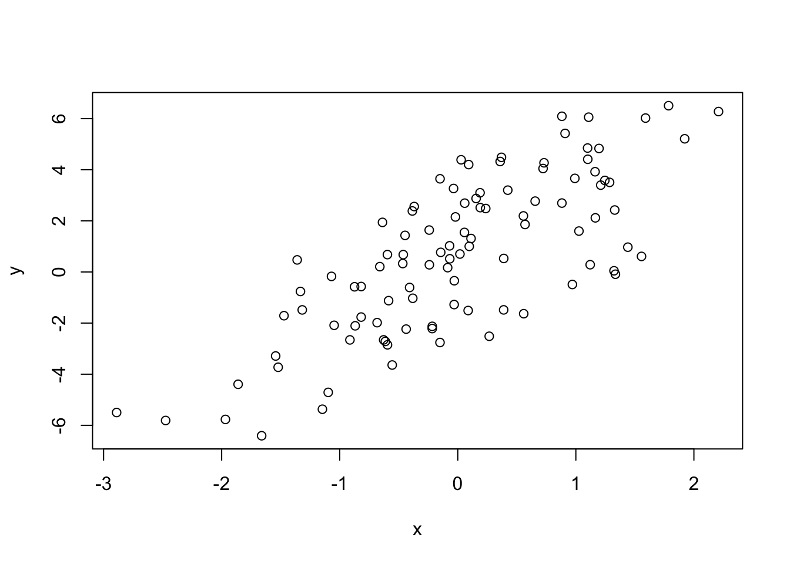
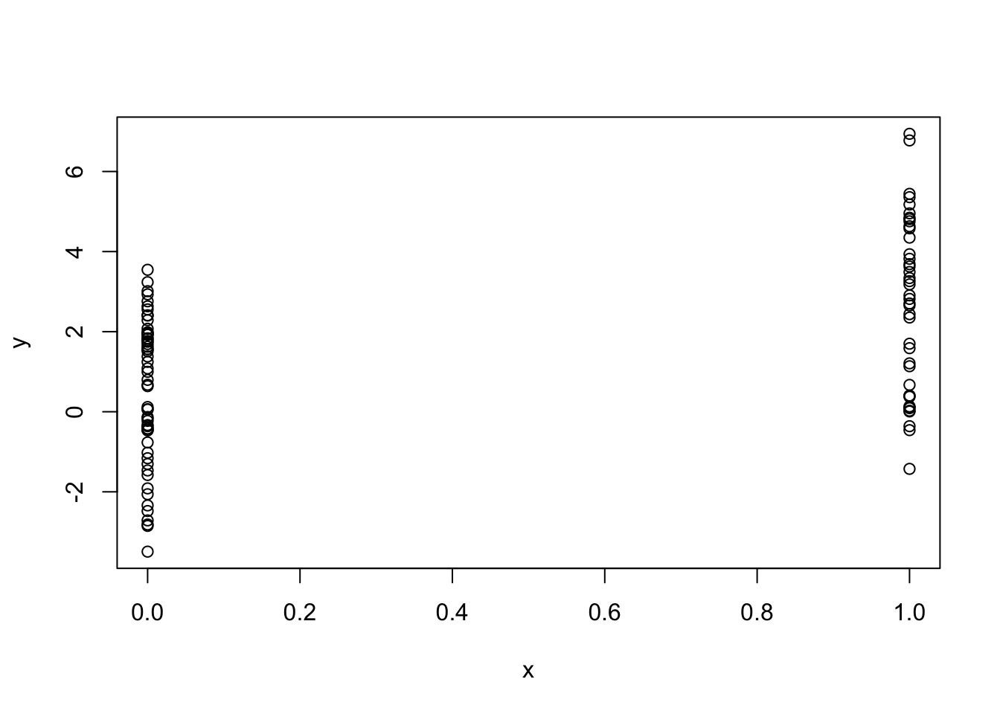

rnorm: Generate random normal variates with a given mean and standard deviation
dnorm: Evaluate the normal probability density (with a given mean, sd) at a point (or vector of points)
pnorm: Evaluate the cumulative distribution function for a normal distribution
rpois: Generate random Poisson variates with a given rate
Probability distribution functions usually have four classes associated with them. The functions are prefixed with:
d for density
r for random number generation
p for cumulative distribution
q for quantile function
Working with normal distributions require these for functions:
dnorm(x, mean =0, sd =1, log =FALSE)pnorm(q, mean =0, sd =1, lower.tail =TRUE, log.p =FALSE)qnorm(p, mean =0, sd =1, lower.tail =TRUE, log.p =FALSE)rnorm(n, mean =0, sd =1)
If \(\Phi\) is the cumulative distribution function (CDF) of the standard normal distribution, then pnorm(q)\(= \Phi(q)\) and qnorm(p)\(= \Phi^{-1}(p)\), where \(\Phi^{-1}\) denotes the quantile function (the inverse CDF).
For example, to generate ten random numbers, we can call:
We can see the first two calls to rnorm() result in different vectors of random numbers. However, after calling set.seed(1) and generating a set of five random numbers again, we get the same vector as the first call to rnorm().
Generating Poisson Data
We can also generate random variables for other probability distributions. For example, here we’ll generate ten Poisson random variables with a rate of 1, ten with a rate of 2, and ten with a rate of 20.
rpois(10, 1)
[1] 0 0 1 1 2 1 1 4 1 2
rpois(10, 2)
[1] 4 1 2 0 1 1 0 1 4 1
rpois(10, 20)
[1] 19 19 24 23 22 24 23 20 11 22
We can also evaluate the cumulative distribution function for the Poisson distribution.
ppois(2, 2) # Pr(x <= 2)
[1] 0.6766764
ppois(4, 2) # Pr(x <= 4)
[1] 0.947347
ppois(6, 2) # Pr(x <= 6)
[1] 0.9954662
In the example above, we calculate the probabilities of a Poisson random variable to be less than or equal to two, four, and six (respectively) if its rate if two.
Generating Random Numbers From a Linear Model
Suppose we want to simulate from the following linear model:
The linear model above has a single predictor, \(x\) and a random noise, \(\varepsilon\), which has a normal distribution and a standard deviation of 2. The output will be generated by the coefficients \(\beta_0\) and a slope of \(\beta_1\), and we have to assume that \(\beta_0 = 0.5\) and \(\beta_1 = 2\).
So the question is How do we simulate from this model?
# We start by setting the `seed` to `20`set.seed(20)# Then, we generate the predictor, which has a standard normal distributionx <-rnorm(100)# We, then, generate ε, which has a standard normal distribution, a mean of zero and sd of 2e <-rnorm(100, 0, 2)# Then, we simulate the adding operationy <-0.5+2* x + esummary(y)
Min. 1st Qu. Median Mean 3rd Qu. Max.
-6.4084 -1.5402 0.6789 0.6893 2.9303 6.5052
plot(x, y)

Looking at the plot we can see that x and y have a linear relationship, as expected.
Now, to make a variation of it, let’s say x is a binary random variable, maybe representing a gender or a treatment versus control scenario. For that, we can generate binary data using a binomial distribution via the rbinom() function.
Min. 1st Qu. Median Mean 3rd Qu. Max.
-3.4936 -0.1409 1.5767 1.4322 2.8397 6.9410
plot(x, y)

As expected, we see a different graph now, because the x variable is binary. However, y is still continous, it’s normal. So, we see a linear trend one more time.
Now, let’s suppose we want to simulate a generalized linear model from a slightly more complicated model, perhaps with a Poisson distribution.
So, we want to simulate from a Poisson model where: